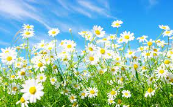
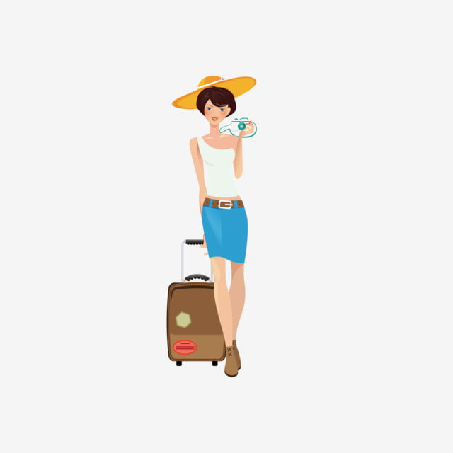
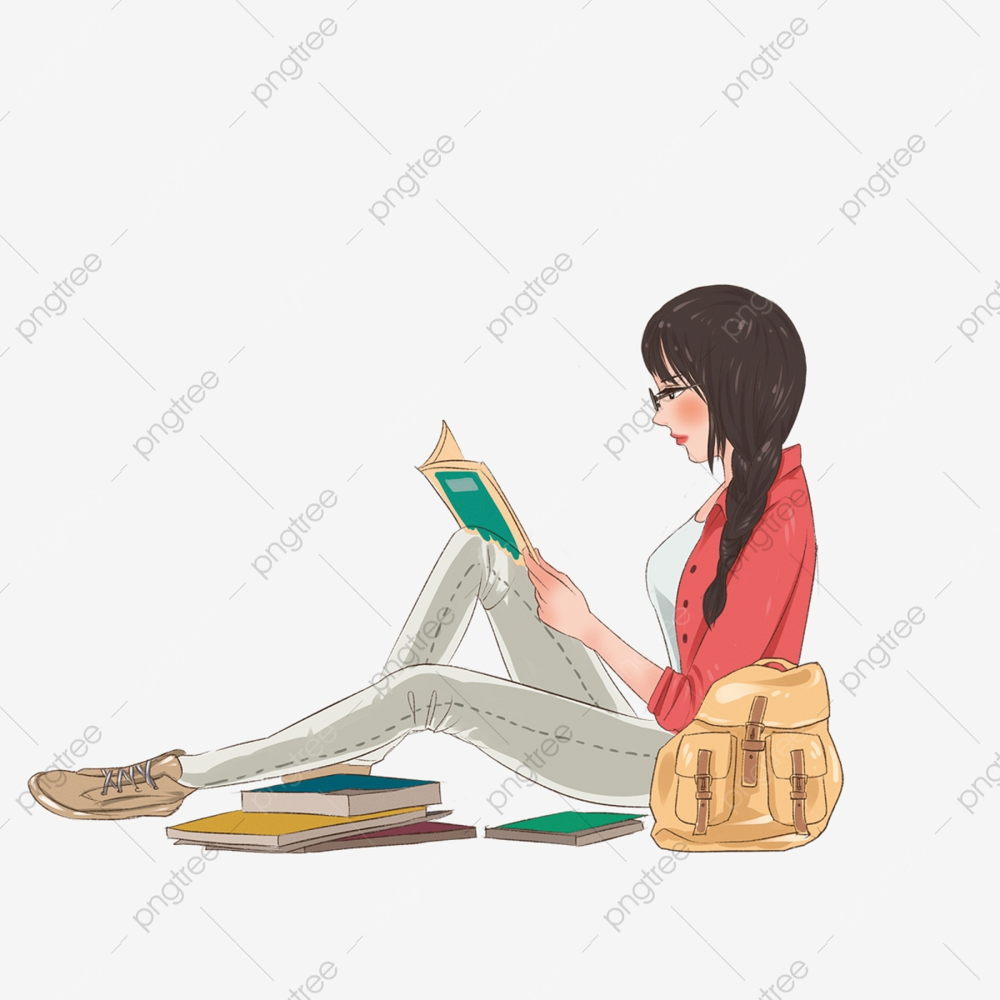
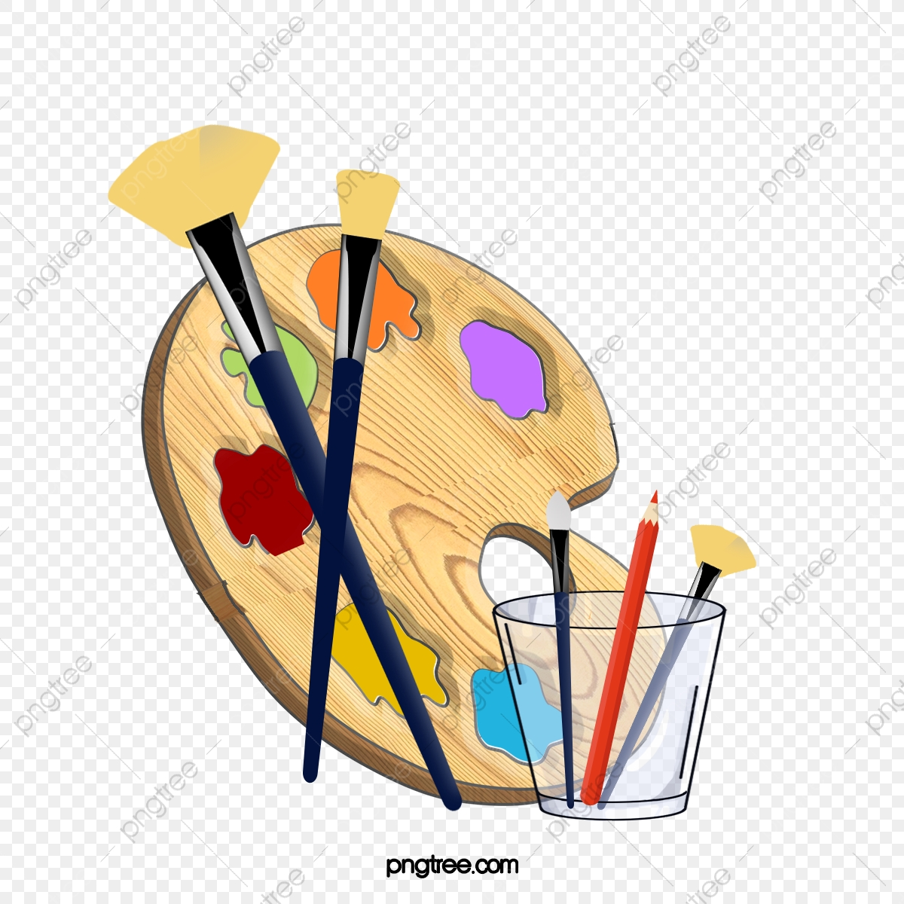
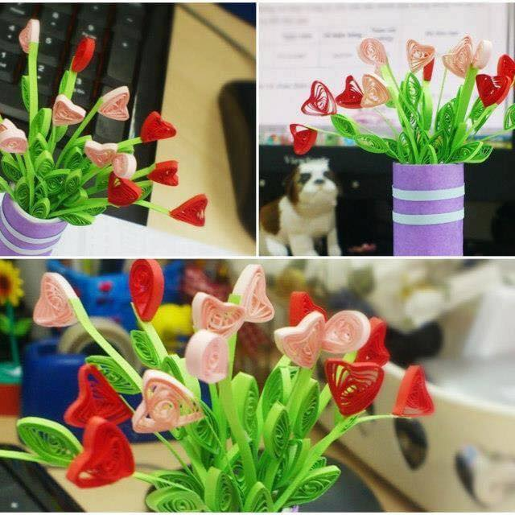

Thông tin cá nhân Món ăn ưa thích Đồ ăn ưa thích
Địa chỉ: Khâm Thiên, Xã Đàn, Đống Đa, Hà Nội.
Số điện thoại: 091212199
Email:Anhnt.tb@gmail.com

Đây là link facebook
とっても平凡な人間です
Đây là kênh youtube
Giờ thì chưa có gì đâu, mai này sẽ tạo nội dung
Thích du lịch, đọc sách, làm tình nguyện, nghe nhạc, vẽ tranh
  
Nhấn vào để tra các điểm hiến máu tình nguyện
Ưu tiên dùng sản phẩm dạng nước, serum trước sản phẩm dạng gel hoặc kem vì tính thẩm thấu của nước hoặc serum cao hơn 2 loại còn lại
Đây là một trích đoạn nói về ảnh hưởng của màu sắc đối với tâm lý hay còn gọi là tâm lý màu sắc:
Color is a powerful communication tool and can be used to signal action, influence mood, and even influence physiological reactions. Certain colors have been associated with increased blood pressure, increased metabolism, and eyestrain. So how exactly does color work? How is color believed to impact mood and behavior?
Thử để ảnh này ở giữa câu văn tức là bên phải của câu này  Ảnh bàn làm việc
Thử đặt một bức ảnh bên 1 đoạn văn dài xem sao, dùng lệnh float
In 1666, English scientist Sir Isaac Newton discovered that when pure white light passes through a prism, it separates into all of the visible colors. Newton also found that each color is made up of a single wavelength and cannot be separated any further into other colors.
Further experiments demonstrated that light could be combined to form other colors. For example, red light mixed with yellow light creates an orange color. Some colors, such as green and magenta, cancel each other out when mixed and result in a white light.